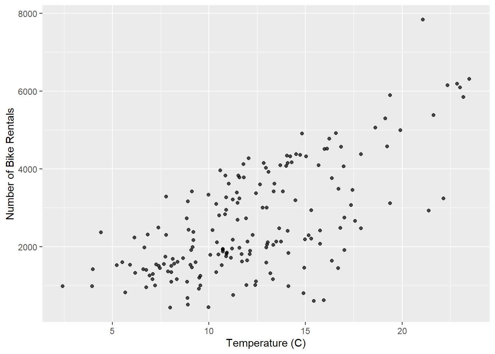

library(tidyverse)
library(infer)
library(ggformula)
library(broom)
library(openintro)
library(knitr)AE 04: Randomization test for the slope
Bikeshare
Important
Open RStudio and create a subfolder in your AE folder called “AE-04”
Go to the Canvas and locate your
AE 04assignment to get started.Upload the
ae-04.qmdanddcbikeshare.csvfiles into the folder you just created. The.qmdand PDF responses are due in Canvas no later than Thursday, September 12 at 11:59pm.
Data
Our dataset contains daily rentals from the Capital Bikeshare in Washington, DC in 2011 and 2012 filtered to only contain the winter months. It was obtained from the dcbikeshare data set in the dsbox R package.
We will focus on the following variables in the analysis:
count: total bike rentalstemp_orig: Temperature in degrees Celsius
winter <- read_csv("../ae/data/dcbikeshare.csv") |>
mutate(season = case_when(
season == 1 ~ "winter",
season == 2 ~ "spring",
season == 3 ~ "summer",
season == 4 ~ "fall"
),
season = factor(season)) |>
filter(season == "winter")Rows: 731 Columns: 17
── Column specification ────────────────────────────────────────────────────────
Delimiter: ","
dbl (16): instant, season, yr, mnth, holiday, weekday, workingday, weathers...
date (1): dteday
ℹ Use `spec()` to retrieve the full column specification for this data.
ℹ Specify the column types or set `show_col_types = FALSE` to quiet this message.glimpse(winter)Rows: 181
Columns: 17
$ instant <dbl> 1, 2, 3, 4, 5, 6, 7, 8, 9, 10, 11, 12, 13, 14, 15, 16, 17, …
$ dteday <date> 2011-01-01, 2011-01-02, 2011-01-03, 2011-01-04, 2011-01-05…
$ season <fct> winter, winter, winter, winter, winter, winter, winter, win…
$ yr <dbl> 0, 0, 0, 0, 0, 0, 0, 0, 0, 0, 0, 0, 0, 0, 0, 0, 0, 0, 0, 0,…
$ mnth <dbl> 1, 1, 1, 1, 1, 1, 1, 1, 1, 1, 1, 1, 1, 1, 1, 1, 1, 1, 1, 1,…
$ holiday <dbl> 0, 0, 0, 0, 0, 0, 0, 0, 0, 0, 0, 0, 0, 0, 0, 0, 1, 0, 0, 0,…
$ weekday <dbl> 6, 0, 1, 2, 3, 4, 5, 6, 0, 1, 2, 3, 4, 5, 6, 0, 1, 2, 3, 4,…
$ workingday <dbl> 0, 0, 1, 1, 1, 1, 1, 0, 0, 1, 1, 1, 1, 1, 0, 0, 0, 1, 1, 1,…
$ weathersit <dbl> 2, 2, 1, 1, 1, 1, 2, 2, 1, 1, 2, 1, 1, 1, 2, 1, 2, 2, 2, 2,…
$ temp <dbl> 0.3441670, 0.3634780, 0.1963640, 0.2000000, 0.2269570, 0.20…
$ atemp <dbl> 0.3636250, 0.3537390, 0.1894050, 0.2121220, 0.2292700, 0.23…
$ hum <dbl> 0.805833, 0.696087, 0.437273, 0.590435, 0.436957, 0.518261,…
$ windspeed <dbl> 0.1604460, 0.2485390, 0.2483090, 0.1602960, 0.1869000, 0.08…
$ casual <dbl> 331, 131, 120, 108, 82, 88, 148, 68, 54, 41, 43, 25, 38, 54…
$ registered <dbl> 654, 670, 1229, 1454, 1518, 1518, 1362, 891, 768, 1280, 122…
$ count <dbl> 985, 801, 1349, 1562, 1600, 1606, 1510, 959, 822, 1321, 126…
$ temp_orig <dbl> 14.110847, 14.902598, 8.050924, 8.200000, 9.305237, 8.37826…Exploratory data analysis
gf_point(count ~ temp_orig, data = winter, alpha = 0.7) |>
gf_labs(
x = "Temperature (C)",
y = "Number of Bike Rentals",
)
Model
model_fit <- lm(count ~ temp_orig, data = winter)
tidy(model_fit) |>
kable(digits = 2)| term | estimate | std.error | statistic | p.value |
|---|---|---|---|---|
| (Intercept) | -111.04 | 238.31 | -0.47 | 0.64 |
| temp_orig | 222.42 | 18.46 | 12.05 | 0.00 |
Hypothesis test
Tip
For code chunks with fill-in-the-blank code, change code chunk option to #| eval: true once you’ve filled in the code.
State the null and alternative hypotheses
[Add hypotheses in mathematical notation]
Generate null distribution using permutation
Fill in the code, then set eval: true .
n = 100
set.seed(212)
null_dist <- _____ |>
specify(______) |>
hypothesize(null = "independence") |>
generate(reps = _____, type = "permute") |>
fit()Visualize distribution
# Code for histogram of null distributionCalculate the p-value.
# get observed fit
observed_fit <- winter |>
specify(count ~ temp_orig) |>
fit()
# calculate p-value
get_p_value(
____,
obs_stat = ____,
direction = "two-sided"
)- What does the warning message mean?
State conclusion
[Write your conclusion in the context of the data.]
Important
To submit the AE:
- Render the document to produce the PDF with all of your work from today’s class.
- Upload your PDf and .qmd files to Canvas.